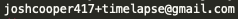

A time-lapse of where and when Jewish books were published. Each item that falls on the map is a book that was written in a certain place/time. Special thanks to Sefaria and HebrewBooks.org for their extensive lists of published works.
If for some reason you're not seeing anything happening on the map, try refreshing a couple of times.  for any questions. It's our hope that this leverages some simple structured data to tell part of our people's story. Enjoy!